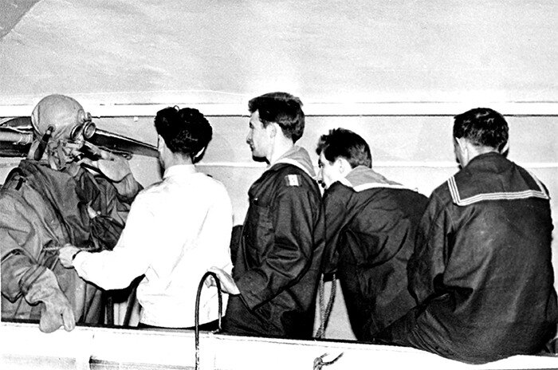

День подводника... и космонавта

Невыразительная, в общем-то, фотография примечательна одним связанным с ней обстоятельством.
Это обычное занятие по легководолазной подготовке, которых в училище было много, выделяется тем, что состоялось оно 12 апреля 1961 года. Работая на дне бассейна, получаю сигнал срочного выхода на поверхность. Подхожу к трапу, карабкаюсь вверх, смотрю - инструктор и все товарищи, которые обеспечивали погружение, вразнобой кричат: Человек в космосе! Понять ничего не могу, инструктор смеется, шлепает меня ладонью по голове, отправляя вниз продолжать работу. И только закончив программу погружения, выйдя на поверхность и сняв с себя водолазные доспехи разобрался, что старший лейтенант (он же майор) Гагарин совершил первый полет в космос. О том, что творилось после этого на улицах написано много, ликование было всеобщим.